자유형(自由型, Freestyle swimming, 문화어: 자유헤염, 뻘헤염)은 수영 경기 종목의 하나로 특별히 헤엄치는 방법에 제한은 없다. 하지만, 단체혼영 및 개인혼영 종목에서의 자유형은 접영, 평영, 배영 이외의 영법을 가리킨다. 자유형이라고 하는 형태의 영법도 있다고 하는데 이는 맞지 않는 말이다. 이런 영법은 실제로는 대부분 자유형 종목에서 사용되는 크롤 영법을 가리킨다.
사실상 크롤로 경기를 겨루는데 6비트, 4비트, 2비트 등 헤엄치는 방법이 다양하게 세분되어 있지만, 단거리에 뛰어난 선수는 6비트, 장거리에 뛰어난 선수는 4비트, 2비트가 많다. 50m와 같이 한 순간에 승부가 결정되는 종목부터 1500m와 같이 장시간이 걸리는 종목까지 많은 종목이 존재한다.
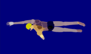 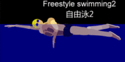 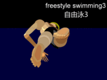평영(平泳, 문화어: 가슴헤염, 영어: breaststroke)은 수영 영법이다. 수영 도중 많은 시간 동안 얼굴을 수면 위로 내밀 수 있으며, 또한 안정적으로 헤엄칠 수 있기 때문에 쉬엄쉬엄 헤엄을 치는 사람들이 많이들 구사하는 영법이다. 대부분의 수영 초보자들은 크롤 영법이나 평영 영법부터 시작해서 수영을 배운다.
하지만, 사람들은 수영 경기 종목 중 평영을 가장 어려운 영법으로 꼽고 있다. 평영이 다른 영법에 비해 상당한 지구력과 다리 힘을 요구하기 때문이다. 영법 그 자체로만 보면 경쟁 영법들 중 속도가 가장 느린 편에 속하며 모든 영법 가운데 가장 오래된 것으로 간주된다.
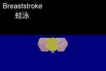 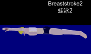 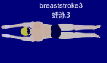배영(背泳, 문화어: 누운헤염, backstroke, back crawl)은 보통의 다른 수영 방법들과 다르고 물 속에서 출발한다. 다른 수영 방법들은 물을 보고 수영을 하는데 배영은 천장을 달려있는 깃발을 보고 하는 것이다. 팔은 한팔 한팔 젖혀 나가는 것이 보통의 방식이다. 팔 동작이나 다리 동작과는 상관없이 누워서 하는 영법은 대부분 배영이라고 부른다.
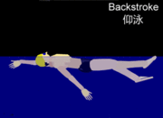 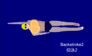 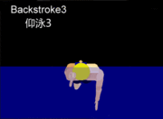접영(蝶泳, 문화어: 나비헤염, butterfly stroke)은 수영의 종목 가운데 가장 어려운 수영 방법으로 알려져 있는 영법이다. 양쪽 팔을 모두 앞에서 뒤로 허벅지를 스쳐서 하는 수영이며, 모든 영법과 같이 힘도 필요하지만 특히 접영은 물을 잘 이용해야 좋은 기록과 올바른 자세가 나오는 영법이다.
접영에는 한팔접영과 양팔접영이 있으며, 한팔접영은 양팔접영을 배우기 전의 초보자들이 거치는 단계이다.
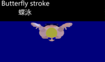 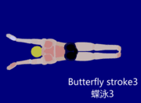
· 한팔접영: 한쪽 팔씩 돌아가면서 앞에서 뒤로 허벅지를 스쳐서 수영한다.
· 양팔접영: 두쪽 팔을 같이 돌리면서 앞에서 뒤로 허벅지를 스쳐서 수영한다.